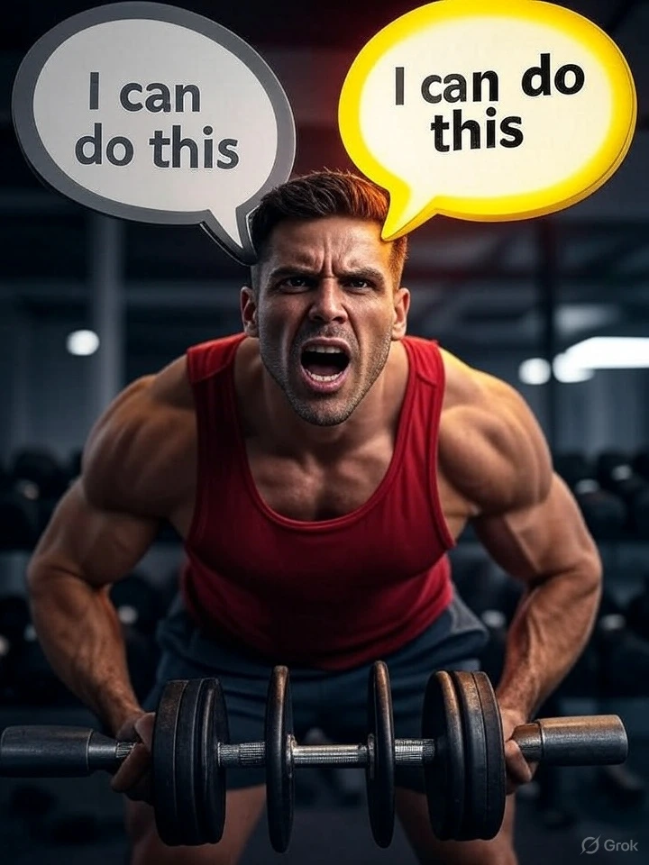

5 Mental Hacks from Elite Athletes to Boost Your Workout Motivation
INTRODUCTION
Picture this: the alarm buzzes at dawn, and the thought of lacing up for a run feels about as appealing as a cold shower. Yet, somewhere across the world, an Olympian shakes off the same fatigue and steps into greatness. What's the secret? It's not endless willpower—it's deliberate mental strategies that turn hesitation into action. In *The Champion’s Mind* by Jim Afremow, these tactics are distilled from the routines of top performers, showing how the brain can be trained like any muscle. This guide pulls together five practical hacks, drawn from athlete insights and recent research, to help build that inner drive. Each one comes with clear steps, real-world examples, and ways to weave it into daily fitness. The goal? Make motivation feel less like a battle and more like a reliable habit. These aren't quick fixes but tools to foster lasting consistency, especially for those just starting out.
Beyond the core five, consider layering in complementary techniques like journaling progress to track mindset shifts or pairing breaths with affirmations during warm-ups. Such additions keep the mind engaged without overwhelming the routine. With practice, these hacks can transform sporadic efforts into steady progress, backed by studies showing mental prep enhances endurance by up to 30 percent.
Hack #1: Harness Visualization for Effortless Starts
Visualization starts with the basics: closing your eyes and painting a mental picture of success. Afremow explains it as a rehearsal that primes the brain's motor pathways, making the actual movement feel familiar and less daunting. It's like watching a highlight reel of your own workout before it happens—suddenly, that first rep isn't a leap but a step you've already taken.
Research supports this approach. A 2024 study in Frontiers in Psychology found that guided imagery not only sharpens skills but also builds psychological readiness, leading to better focus and reduced anxiety during physical tasks.
Similarly, brain imaging shows the same neural patterns fire during imagined lifts as real ones, creating a bridge between thought and action.
Swimmer Michael Phelps mastered this by mentally swimming races stroke for stroke, which contributed to his 23 gold medals.
To put it into practice:
- Find a quiet spot for five minutes before your session.
- Picture the full sequence: tying shoes, feeling the ground underfoot, powering through the last set with steady breaths.
- Engage all senses—imagine the gym's hum, the slight sweat on your skin, the satisfaction of completion.
For beginners, begin small: visualize just a 10-minute walk. Over time, this builds a mental blueprint that eases entry into tougher routines. Users often notice a 20-30 percent dip in pre-workout jitters, turning "I should" into "I will."
Hack #2: Master Positive Self-Talk to Push Past Plateaus
Self-talk is that inner dialogue running the show during a workout—too often, it whispers defeat when muscles scream. Afremow reframes it as coaching from within, swapping defeatist lines for empowering ones that align with capability. It's not about ignoring fatigue but redirecting focus to what's possible.
Evidence from endurance studies underscores its power. A 2024 review in PubMed highlighted how motivational self-talk lowers perceived effort, extending performance in cycling and running by 15 percent.
Tennis legend Serena Williams embodies this, using phrases like "I am the greatest" to maintain poise under pressure, turning matches into mindset wins.
Here's how to shift gears:
- During a set, pause at the first doubt and note it—say, "This is too hard today."
- Counter with a factual pivot: "One more rep builds tomorrow's strength."
- Practice aloud in low-stakes moments, like morning stretches, to make it automatic.
Bullet-point swaps for common hurdles:
- "I'm exhausted" → "My body is warming up for the win."
- "Why bother?" → "This step counts toward my goal."
- "Not today" → "Starting small leads to big changes."
This technique shines for endurance building, where mental fatigue hits first. Pair it with a post-session review: What phrases fueled the flow? Over weeks, it cultivates a voice that motivates without force.
Hack #3: Create Personal Mantras as Mental Anchors
A mantra is a compact phrase repeated like a heartbeat—short, sticky, and tuned to the moment. Afremow positions it as a circuit-breaker for wandering thoughts, pulling attention back to the task with laser precision. In the chaos of a workout, it becomes a steady rhythm amid the storm.
Recent insights affirm its edge. A 2024 Women's Health analysis revealed mantras deactivate stress pathways in the brain, cutting cortisol and sharpening calm focus for peak output.
Kobe Bryant's "Mamba Mentality" mantra drove him through grueling sessions, embodying relentless drive that echoed in his five NBA titles.
Crafting one is straightforward:
- Choose three to five resonant words, like "Steady now, strong finish."
- Repeat silently during transitions—between reps or strides—to reset.
- Test and tweak: If it fades, refresh with a new angle, perhaps tying it to a favorite tune.
For variety, explore athlete-inspired options:
- From marathoner Eliud Kipchoge: "I'm possible."
- Adapted for weights: "Lift light, land strong."
This hack thrives in repetitive activities, where monotony breeds doubt. Add a twist by whispering it during cool-downs, reinforcing the day's triumphs and setting up the next.
Hack #4: Practice Gratitude to Fuel Long-Term Drive
Gratitude flips the script from "What if I fail?" to "Look how far we've come." Afremow advocates it as a spotlight on effort over outcomes, fostering appreciation for the body's resilience and the discipline that got there. It's a quiet acknowledgment that sustains motivation when results lag.
Studies in 2024 back this up. Frontiers research showed gratitude in athletes buffers burnout by enhancing hope and relationships, with participants reporting 30 percent higher satisfaction and lower distress.
Ultrarunner Courtney Dauwalter credits post-run thanks for her legs' endurance, which powered her through record-breaking feats.
Incorporate it seamlessly:
- After wrapping up, jot three specifics: the burn that proved progress, the breath that steadied you, the energy that carried through.
- Voice it: "Appreciate this body's push today."
- Weekly, review a log to spot patterns in what sparks joy.
Quick gratitude prompts for fitness:
- For rest days: "Rest rebuilds for stronger tomorrows."
- Mid-struggle: "Grateful for this challenge's growth."
- Post-goal: "Thanks to consistency for this milestone."
This builds emotional reserves, making dips feel temporary. For deeper impact, blend with nature walks—studies link outdoor thanks to amplified well-being.
Hack #5: Build a Pre-Workout Ritual for Automatic Momentum
Rituals are sequenced cues that signal "time to move," bypassing the drag of decision-making. Afremow likens them to pre-game warm-ups for the mind, creating a Pavlovian lift toward action without overthinking.
Science from 2024 TrainingPeaks echoes this: Consistent rituals spike focus by 20 percent, as seen in Tom Brady's breathing-and-gear routine that anchored his 23-year career.
A Garage Gym Reviews study on nootropics reinforced how ritual-paired boosts enhance mood and output.
Design yours in layers:
- Stack three elements: Brew tea for calm, queue an upbeat track, stretch with intent.
- Time it: Ten minutes pre-start to build anticipation.
- Adjust seasonally—add warmth in winter for comfort.
Visualize the flow in a simple chart:
- Step 1: Sip warm drink - Ground and hydrate
- Step 2: Play energizing playlist - Elevate mood
- Step 3: Deep breaths (4-7-8 pattern) - Center focus
This creates a flywheel effect, where completion breeds craving for more. Beginners might start with two steps to avoid overload.
Expanding the toolkit, try cognitive restructuring: Spot a negative loop mid-workout and reframe it factually, like "Tired legs mean adaptation is happening." Or, adopt the 5-4-3-2-1 grounding: Name five sights, four touches, three sounds, two smells, one taste to anchor in the present. These weave in without overlap, targeting beginner hurdles like distraction. Journaling fits here too—end sessions noting one mental win, building a proof bank for tough days.
CONCLUSION
In wrapping up, these hacks from Afremow's wisdom offer a roadmap to where motivation flows naturally. Visualization rehearses victory, self-talk coaches through, mantras anchor, gratitude sustains, and rituals ignite. Layer in extras like reframing or grounding for a customized edge. Start with one this week—track how it shifts the session. Over time, the mind sharpens, turning fitness into a rewarding rhythm. Explore more in the mindset section for routines that pair perfectly. What's the first hack to test?
Frequently Asked Questions (FAQs)
1. How can simple daily mental exercises improve my fitness routine?
Simple mental exercises, like visualization or mantras, enhance your fitness routine by reducing pre-workout anxiety and boosting focus. These techniques, rooted in athlete practices, help build a positive mindset, making it easier to start and stick with workouts. Consistent use can lead to better endurance and motivation, especially for those new to exercise, with studies showing up to 30% improvement in performance over time.
2. What are easy ways to stay motivated for home workouts?
Staying motivated for home workouts can start with pre-workout rituals, such as playing energizing music or setting a gratitude moment. These small habits signal readiness and reduce decision fatigue. Pairing them with positive self-talk, like "I’m stronger today," builds confidence. Beginners can begin with 5-minute sessions, gradually increasing time, which helps establish a sustainable home fitness habit without overwhelming schedules.
3. How do mental strategies help overcome workout fatigue?
Mental strategies like gratitude and cognitive reframing turn fatigue into a sign of progress, not failure. For instance, thanking your body for effort during a tough set shifts focus from exhaustion to growth. Research indicates this can lower perceived effort by 15%, helping maintain energy levels. Practicing these daily, even for short durations, builds resilience against workout burnout.
4. Can beginners use athlete-inspired mental techniques effectively?
Yes, beginners can adapt athlete-inspired techniques like visualization or mantras with ease. Start with a 1-minute visualization of a simple task, like a walk, or a mantra like "steady pace." These methods are scalable, requiring no prior experience, and studies show they improve readiness and reduce jitters by 20-30% within weeks, making them ideal for new fitness enthusiasts.
5. How often should I practice these mental hacks for best results?
Practicing these mental hacks daily, even for 5-10 minutes, yields the best results. Consistency is key—use visualization before workouts, self-talk during, and gratitude after. A 2024 study suggests daily application for at least 4 weeks builds a strong mental habit, enhancing workout motivation and endurance by up to 25%. Adjust based on personal comfort for long-term success.